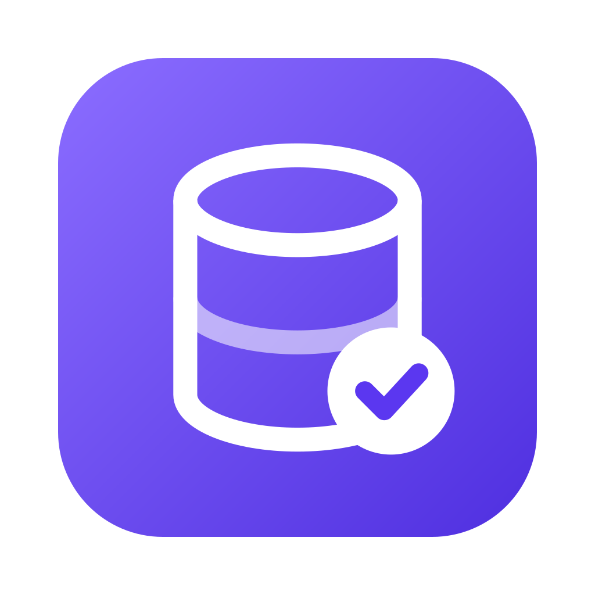
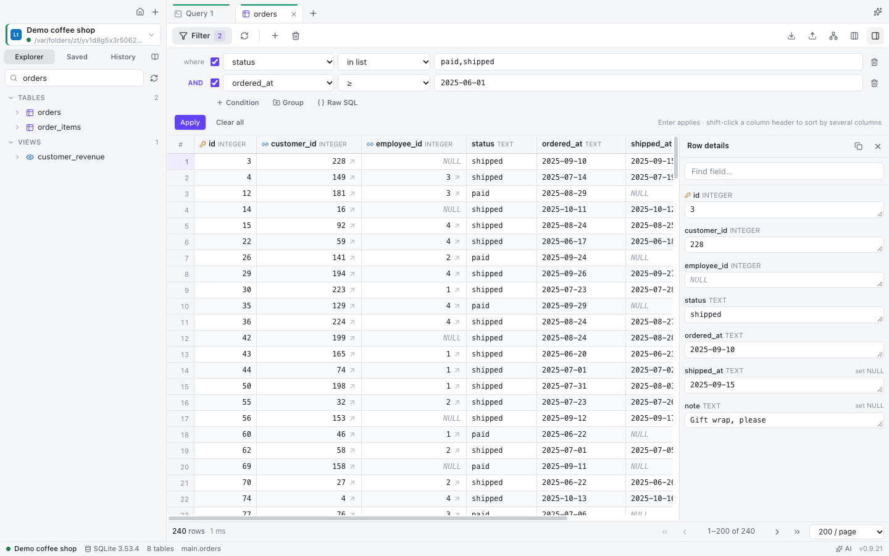
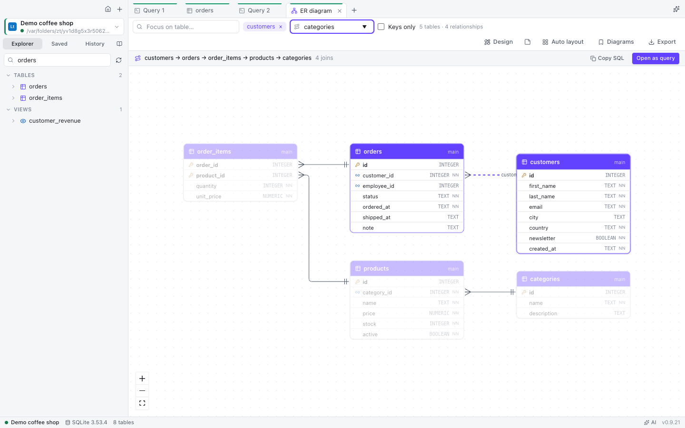
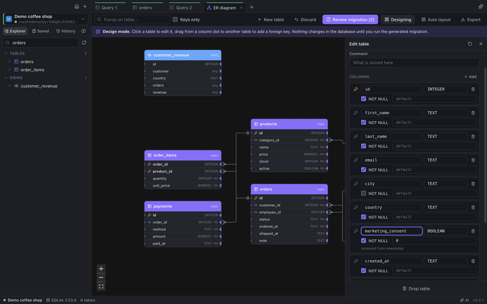
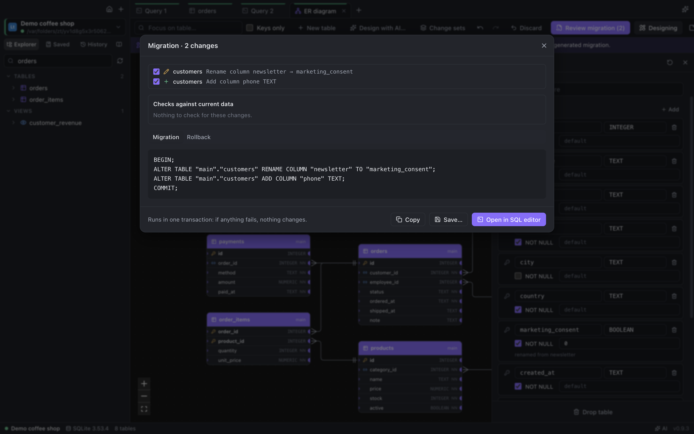
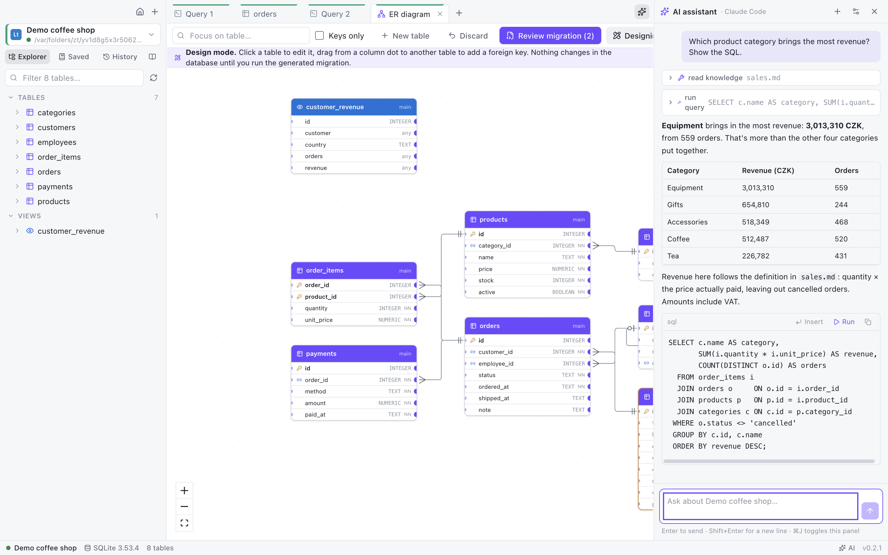

Interactive ER diagrams
Automatic layout, crow's-foot notation, focus on a table and its neighbours, saved subject-area diagrams, and the join path between any two tables as ready SQL.

DB MastermindBrowse and filter data without limits, draw and redesign your schema with generated migrations, and ask an AI that knows your database. Free and open source, nothing to install on Windows.

No row limits, no paywalled features. Light, dark and high-contrast themes (follow the system or pick one in Settings), in English and Czech.
Nested AND/OR groups, 25+ operators (in list, between, regex, last N days, this month), raw WHERE, or describe the filter in plain words.
Schema-aware autocomplete that writes whole JOINs from foreign keys, snippets, parameters, execution plans, history and saved queries.
Drop a CSV, Parquet, JSON or Excel file on the window and query it with SQL. Czech exports with decimal commas just work.
Chart any result in one click and pin it to a dashboard that refreshes itself.
Schemas between environments with the migration for the target, and table data with a sync script.
Running queries and lock waits, cancel or end sessions, users & roles with their privileges.
SSH tunnels, SSL, read-only and production guard rails, SQL Server Windows authentication, Oracle without Instant Client.
Export connections without passwords, a data dictionary as one HTML page, and a Markdown knowledge base in Git.
Automatic layout, crow's-foot notation, focus on a table and its neighbours, saved subject-area diagrams, and the join path between any two tables as ready SQL.

Edit tables, columns, keys and indexes right on the diagram. DB Mastermind writes the migration for your database, checks the existing data first and gives you the rollback script.

Keep the model as a DBML file next to your notes, see the diagram as you type, and compare it with the database to get the migration.

Use your own API key (Anthropic, OpenAI, OpenRouter, Gemini, Azure, local Ollama) or your existing Claude Code / Codex subscription.
The assistant explores the schema, samples data, runs read-only queries and asks before any change. Press Ctrl/⌘ I in the editor to describe a query; failed statements get a Fix with AI button.
A per-database knowledge base of Markdown notes teaches it what your codes and statuses mean — and AI can write the first version for you.

DB Mastermind is also an MCP server: agents get schema exploration, read-only queries, join paths and your knowledge base, using the connections you already have. They see only connections where you allow AI, read-only unless you say otherwise.
Easiest: in the app open Settings → MCP server and click Add to Claude Code / Claude Desktop / Codex / Cursor / VS Code. It writes their config for you and keeps a .bak copy. The same page shows the exact command for your computer.
Tools for agents: list_connections, list_tables, describe_table, search_schema, get_relationships, find_join_path, sample_rows, run_query, explain_query, search_knowledge, read_knowledge, plus prompts such as document_database.
Your databases, queries and passwords stay on your computer. No account, no tracking, nothing sent anywhere you didn't choose.
No analytics, no crash reports, no usage statistics, no sign-in.
Passwords and API keys are encrypted with your system keychain and go only to the database or AI provider they belong to.
Off until you set up a provider, read-only by default, and switchable off per connection or for the whole company. Ollama keeps it all on your machine.
The only automatic network call asks GitHub whether a new version exists. Turn it off in Settings → General.
Free for everyone, with no feature limits. The app keeps itself up to date.
No installation: download the portable zip, unzip it, run DB Mastermind.exe. Settings stay in the folder.
Installer: …-setup.exe, per user, no admin rights. For IT: per-machine .msi.
Scoop:
scoop install https://github.com/eLh0m3r0/db-mastermind/releases/latest/download/db-mastermind.json
Download the .dmg for Apple Silicon or Intel and drag the app to Applications. The first time, right-click it and choose Open.
Homebrew:
brew tap elh0m3r0/db-mastermind https://github.com/eLh0m3r0/db-mastermind brew install --cask db-mastermind
AppImage: make it executable and run it; it updates itself.
Debian / Ubuntu: the .deb package.